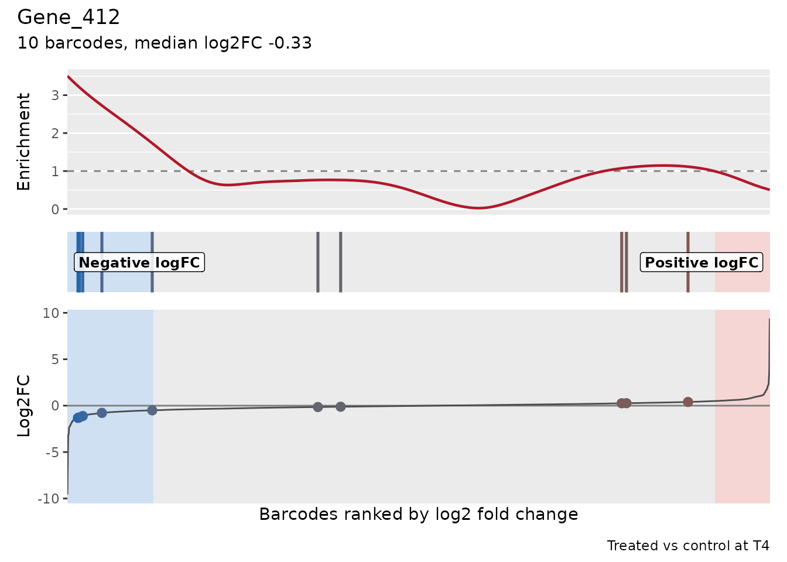
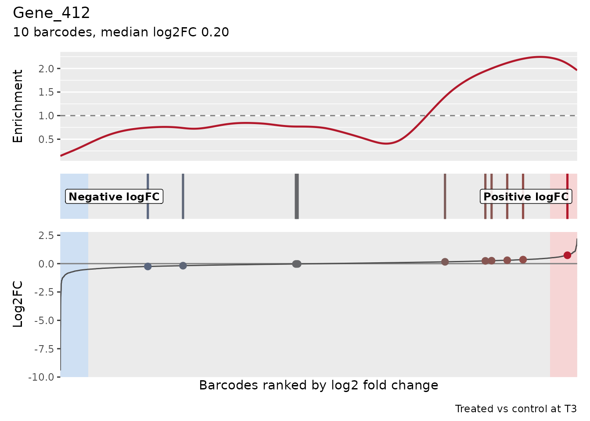
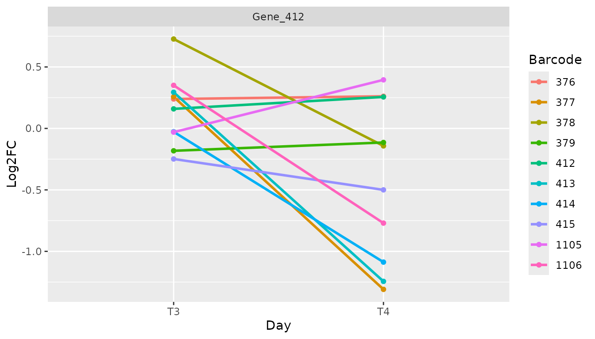
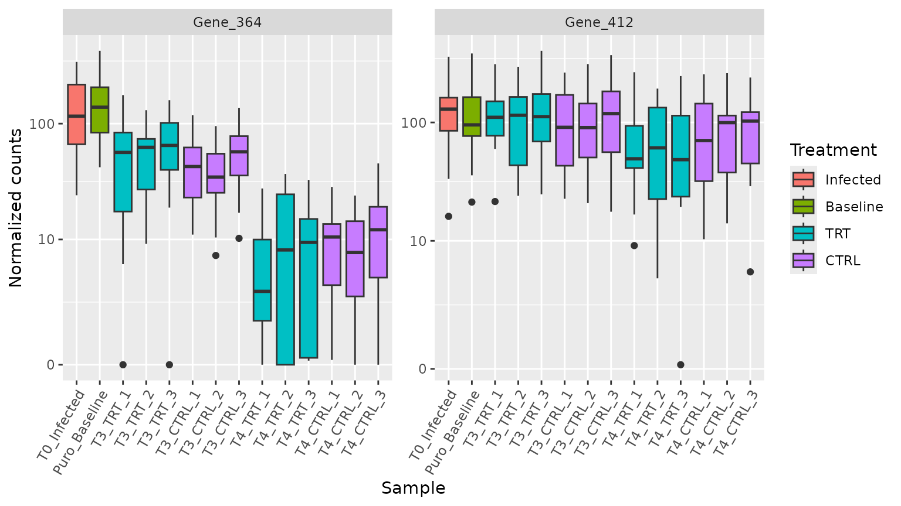
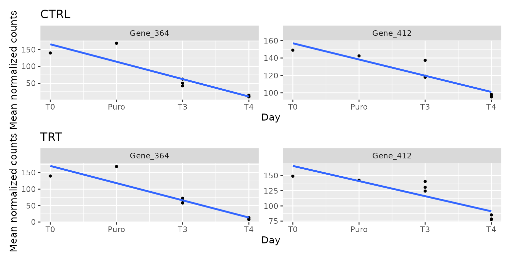

Analysis of a longitudinal screen: from counts to treatment-specific hits
Emanuel Michele Soda
Istituto Europeo Oncologia (IEO), Milano, Italyemanuelsoda@gmail.com
Elena Ceccacci
Istituto Europeo Oncologia (IEO), Milano, Italyelena.ceccacci@ieo.it
2026-10-17
Source:vignettes/Longitudinal_Screen_Analysis.Rmd
Longitudinal_Screen_Analysis.RmdAbout this tutorial
This tutorial analyses a complete pooled shRNA screen with ScreenR, from the raw barcode counts to a list of genes whose knockdown is depleted because of the treatment, and to the evidence that supports each of them. The screen has the structure of many drug-sensitization screens: an infected and selected cell population is split into control and treated cultures, which are sampled at two time points with three biological replicates each.
The question is not only “which genes are depleted?”, but:
- Which genes are depleted in treated cells compared with control cells at the same time point, rather than lost in all cultures because they are needed for growth (essential genes)?
- Is the depletion supported by several shRNAs of the gene and by the biological replicates?
- Is it present at both time points, or does it appear (or grow) over time?
Each step explains why it is needed, what ScreenR does, how to read the result and which decisions it involves. The tutorials 1, 2 and 3 describe the individual functions in more detail; this one puts them together for a longitudinal design.
The experiment
Design
The cells are infected with a pooled library of barcoded shRNAs (about 10 shRNAs for each of 534 genes) and selected with puromycin, which kills the cells that were not infected. The selected population is then split into control and treated cultures, sampled at two time points:
| Sample(s) | Stage | Condition | Replicates | Role in the analysis |
|---|---|---|---|---|
| T0 | Right after infection, before selection | Infected cells | 1 | Representation of the library in the cells; quality control of the infection |
| Puro | After puromycin selection | Baseline | 1 | Starting population of all the cultures; reference for the loss of fitness |
| T3 | First time point | Control | 3 | Reference for the treatment effect at T3 |
| T3 | First time point | Treated | 3 | Treatment effect at T3 |
| T4 | Second time point | Control | 3 | Reference for the treatment effect at T4 |
| T4 | Second time point | Treated | 3 | Treatment effect at T4 |
That is 14 samples. The controls and the treated cultures have the same history except the treatment, so the treatment effect is measured as treated versus control at the same time point: whatever happens in both (for example the loss of shRNAs against genes needed for growth) cancels out. The T0 and Puro samples are single references: they describe where the cultures start from and are used for quality control and for the fitness effects, not for the treatment effect.

The data
ScreenR includes this screen as count_table (the reads
of each barcode in each sample, from the alignment of the sequencing
reads to the library) and annotation_table (the gene
targeted by each barcode). See ?count_table and
?annotation_table.
data(count_table)
data(annotation_table)
dim(count_table)
#> [1] 5323 15
colnames(count_table)
#> [1] "Barcode" "Time_1" "Time_2" "Time_3_TRT_rep1"
#> [5] "Time_3_TRT_rep2" "Time_3_TRT_rep3" "Time_3_rep1" "Time_3_rep2"
#> [9] "Time_3_rep3" "Time_4_TRT_rep1" "Time_4_TRT_rep2" "Time_4_TRT_rep3"
#> [13] "Time_4_rep1" "Time_4_rep2" "Time_4_rep3"
head(annotation_table[, c("Barcode", "Gene")], 3)
#> Barcode Gene
#> 1 10208 Gene_380
#> 2 10502 Gene_380
#> 3 10796 Gene_380The count table has three rows with the barcode "*": the
reads that could not be assigned to any shRNA. They are not barcodes and
appear several times, so they are removed. ScreenR would refuse
duplicated barcode identifiers rather than guess how to combine them
(duplicate_barcodes can sum them instead).
table(count_table$Barcode == "*")
#>
#> FALSE TRUE
#> 5320 3
counts <- count_table[count_table$Barcode != "*", ]The original sample names are not self-explanatory, so the samples are renamed, and their stage, condition and replicate are described explicitly in a sample table instead of being parsed from the names:
samples <- tibble(
Original = colnames(counts)[-1],
Sample = c("T0_Infected", "Puro_Baseline",
paste0("T3_TRT_", 1:3), paste0("T3_CTRL_", 1:3),
paste0("T4_TRT_", 1:3), paste0("T4_CTRL_", 1:3)),
Day = c("T0", "Puro", rep("T3", 6), rep("T4", 6)),
Treatment = c("Infected", "Baseline", rep(c("TRT", "CTRL"), each = 3),
rep(c("TRT", "CTRL"), each = 3)),
Replicate = c(NA, NA, rep(1:3, 4))
)
samples$Group <- ifelse(samples$Day %in% c("T0", "Puro"), samples$Day,
paste(samples$Day, samples$Treatment, sep = "_"))
knitr::kable(samples)| Original | Sample | Day | Treatment | Replicate | Group |
|---|---|---|---|---|---|
| Time_1 | T0_Infected | T0 | Infected | NA | T0 |
| Time_2 | Puro_Baseline | Puro | Baseline | NA | Puro |
| Time_3_TRT_rep1 | T3_TRT_1 | T3 | TRT | 1 | T3_TRT |
| Time_3_TRT_rep2 | T3_TRT_2 | T3 | TRT | 2 | T3_TRT |
| Time_3_TRT_rep3 | T3_TRT_3 | T3 | TRT | 3 | T3_TRT |
| Time_3_rep1 | T3_CTRL_1 | T3 | CTRL | 1 | T3_CTRL |
| Time_3_rep2 | T3_CTRL_2 | T3 | CTRL | 2 | T3_CTRL |
| Time_3_rep3 | T3_CTRL_3 | T3 | CTRL | 3 | T3_CTRL |
| Time_4_TRT_rep1 | T4_TRT_1 | T4 | TRT | 1 | T4_TRT |
| Time_4_TRT_rep2 | T4_TRT_2 | T4 | TRT | 2 | T4_TRT |
| Time_4_TRT_rep3 | T4_TRT_3 | T4 | TRT | 3 | T4_TRT |
| Time_4_rep1 | T4_CTRL_1 | T4 | CTRL | 1 | T4_CTRL |
| Time_4_rep2 | T4_CTRL_2 | T4 | CTRL | 2 | T4_CTRL |
| Time_4_rep3 | T4_CTRL_3 | T4 | CTRL | 3 | T4_CTRL |
The groups define the statistical model: one group for each combination of time point and condition (and one for each reference sample). Replicates of the same group are what the model uses to measure the biological variability.
The ScreenR object
object <- create_screenr_object(
table = counts,
annotation = annotation_table,
groups = factor(samples$Group,
levels = c("T0", "Puro", "T3_CTRL", "T3_TRT", "T4_CTRL", "T4_TRT")),
sample_table = samples[, c("Sample", "Day", "Treatment")],
replicates = samples$Replicate
)
object
#> class: screenr_object
#> dim: 5320 14
#> metadata(1): screenr_layout
#> assays(1): counts
#> rownames(5320): 10208 10502 ... 13876 13995
#> rowData names(5): Barcode Gene Gene_ID Sequence Library
#> colnames(14): T0_Infected Puro_Baseline ... T4_CTRL_2 T4_CTRL_3
#> colData names(5): Sample Day Treatment Group Replicate
#> normalization: none (run normalize_data())The ScreenR object is a SummarizedExperiment, the
standard Bioconductor container for assays with row and column
annotation. Each piece of information is stored once, in the place that
fits it:
-
assay(object, "counts"): the raw counts only, one row per barcode and one column per sample. The barcode identifiers are the row names (as text), not a column of the counts. -
rowData(object): the annotation of each barcode (its gene), aligned with the rows. -
colData(object): the Day, Treatment, Group and Replicate of each sample, aligned with the columns.
assay(object, "counts")[1:3, 1:4]
#> T0_Infected Puro_Baseline T3_TRT_1 T3_TRT_2
#> 10208 3520 4283 2493 3998
#> 10502 280 339 140 542
#> 10796 1507 1533 1120 1125
rowData(object)[1:3, c("Barcode", "Gene")]
#> DataFrame with 3 rows and 2 columns
#> Barcode Gene
#> <character> <character>
#> 10208 10208 Gene_380
#> 10502 10502 Gene_380
#> 10796 10796 Gene_380
colData(object)[c(1, 2, 3, 9), c("Day", "Treatment", "Group", "Replicate")]
#> DataFrame with 4 rows and 4 columns
#> Day Treatment Group Replicate
#> <character> <character> <factor> <integer>
#> T0_Infected T0 Infected T0 NA
#> Puro_Baseline Puro Baseline Puro NA
#> T3_TRT_1 T3 TRT T3_TRT 1
#> T4_TRT_1 T4 TRT T4_TRT 1Because rows and columns are matched by identifier, subsetting or
reordering the object keeps counts, annotation and sample information
together, and the object can be used with any Bioconductor tool that
accepts a SummarizedExperiment. The barcodes with no read
in any sample carry no information and are removed:
object <- remove_all_zero_row(object)
dim(object)
#> [1] 5317 14Quality control
Before looking for hits, we check that the screen worked: enough reads in every sample, a library that is still well represented, and replicates that agree. These checks use the raw counts, except where noted.
Sequencing depth
Each sample should have many more reads than barcodes, so that the counts of each shRNA are not dominated by sampling noise.
plot_mapped_reads(object) +
scale_x_discrete(guide = guide_axis(angle = 45))
depth <- mapped_reads(object)
range(depth$Mapped) / nrow(object)
#> [1] 1283.595 2318.060Every sample has between 1284 and 2318 reads per barcode on average, well above the usual minimum of a few hundred.
Library representation over the screen
Infection and puromycin selection are bottlenecks: shRNAs carried by few cells can be lost by chance, independently of their target. The number of barcodes without any read and the Gini index (how unevenly the reads are spread over the barcodes: 0 when even, close to 1 when a few barcodes take most reads) show how the representation evolves.
(plot_barcode_lost(object) +
scale_x_discrete(guide = guide_axis(angle = 45))) /
plot_gini(object)
Few barcodes are lost at T0 and after selection, and the Gini index increases slowly over time, as expected when the shRNAs against genes needed for growth drop out. Neither the infection nor the selection caused a bottleneck that would make the counts unreliable.
Agreement between replicates
The replicates of a condition should be more similar to each other than to the other samples. This and the following plots compare normalized counts, so the counts are normalized first (the choice of the normalization is discussed in the next section).
object <- normalize_data(object, method = "cpm")
plot_replicate_correlation(object)
correlation <- cor(log2(get_normalized_count_table(object)[, -1] + 1))
round(correlation["T4_TRT_1", c("T4_TRT_2", "T4_TRT_3", "T3_CTRL_2",
"T3_TRT_1")], 3)
#> T4_TRT_2 T4_TRT_3 T3_CTRL_2 T3_TRT_1
#> 0.883 0.887 0.924 0.870All the correlations are high, and the T3 samples are more similar to each other than to the T4 samples. One sample stands out: T4_TRT_1 is more correlated with some T3 samples (for example T3_CTRL_2) than with the other two T4 treated replicates, and it lost far fewer barcodes than them (see above). Removing a replicate needs a technical reason, which we do not have, so it is kept; the sensitivity analysis at the end checks that the conclusions do not depend on it.
Structure of the samples
Multidimensional scaling (MDS) and principal component analysis (PCA) place similar samples close to each other.
plot_mds(object)
plot_pca(object)
The first dimension orders the samples by time (T0 and Puro, then T3, then T4): the largest source of variation is the growth of the cells, which changes the representation of the shRNAs against growth genes in all the cultures. This is why the treatment effect must be measured within each time point. At T3 the treated and control samples overlap. At T4 two treated replicates (T4_TRT_2 and T4_TRT_3) move away from the controls, in different directions on the second dimension, while T4_TRT_1 stays with the controls: the treated cultures at T4 are heterogeneous, which limits the power to detect treatment effects.
Normalization
Samples are sequenced at different depths, so counts are compared
after dividing each sample by an effective library
size. ScreenR offers three choices in
normalize_data():
-
"cpm": the total number of reads of the sample; -
"tmm": the total corrected with the TMM factors of edgeR, which are more robust when many barcodes are depleted in some samples; -
"control": the reads of control barcodes known to be without effect (this library has none).
The normalization matters when many barcodes change in the same samples, because they change the total. A simple check is to compare the effective library sizes of the two methods:
tmm <- normalize_data(object, method = "tmm")
ratio <- get_normalization(object)$effective_library_size /
get_normalization(tmm)$effective_library_size
round(range(ratio), 3)
#> [1] 0.982 1.023The two methods differ by at most 2% in any sample: the treatment and the growth do not change the composition of the library enough to bias the totals, so we keep counts per million. With a strong compositional imbalance, TMM (or control barcodes) would be the right choice.
One normalization for the whole analysis. ScreenR records the normalization in the object (the effective library sizes in the colData, the method in the metadata) and never changes the raw counts. Every result below uses this same normalization: the normalized counts of the plots, the descriptive fold changes and the statistical models. The models use the raw counts, as negative binomial models require, with the effective library sizes as offsets:
get_normalization(object)$method
#> [1] "cpm"
dge <- create_edger_obj(object)
all.equal(dge$samples$lib.size * dge$samples$norm.factors,
unname(get_normalization(object)$effective_library_size))
#> [1] TRUEChanging the normalization with normalize_data() would
update all of them at once.
The statistical model
Why a model with all the samples
The treatment effect of a gene could be measured with fold changes of mean counts, but this ignores two essential sources of information: the replicates, which tell how much a fold change varies between independent cultures, and the several shRNAs of each gene, whose agreement makes a hit credible. ScreenR therefore models the raw counts of each barcode with the negative binomial generalized linear model of edgeR, and then tests the barcodes of each gene together.
The model has one coefficient for each group (the mean abundance of the barcode in that group), and every comparison is a contrast, a combination of group coefficients. All 14 samples enter the same model, so the variability between replicates is estimated from all the replicated groups at once.
design <- create_design_matrix(object)
colnames(design)
#> [1] "T0" "Puro" "T3_CTRL" "T3_TRT" "T4_CTRL" "T4_TRT"The comparisons
The questions of the screen are contrasts between these groups:
contrasts <- list(
# Treatment effect at each time point: treated vs control
T3 = create_contrast(design, treatment = "T3_TRT", control = "T3_CTRL"),
T4 = create_contrast(design, treatment = "T4_TRT", control = "T4_CTRL"),
# Average treatment effect over the two time points
Average = create_contrast(design,
treatment = c("T3_TRT", "T4_TRT"), control = c("T3_CTRL", "T4_CTRL")),
# Loss of fitness: T4 vs the post-selection baseline, in each condition
Fitness_CTRL = create_contrast(design, treatment = "T4_CTRL",
control = "Puro"),
Fitness_TRT = create_contrast(design, treatment = "T4_TRT",
control = "Puro")
)
contrasts$T4
#> T0 Puro T3_CTRL T3_TRT T4_CTRL T4_TRT
#> 0 0 0 0 -1 1A gene that is lost in all the cultures because it is needed for growth has a strong fitness effect in both conditions but no treatment effect, because treated and control cultures lose it in the same way. A treatment-specific hit has a treatment effect: it is depleted in treated cultures compared with the controls of the same time point.
Gene-level test
For each contrast, find_roast_hit(method = "fry") tests
whether the barcodes of a gene, taken together, are depleted. FRY is a
fast, self-contained gene-set test of limma: it uses the replicate
variability of the edgeR model and all the shRNAs of the gene, so a gene
is called when its shRNAs are depleted consistently, relative to the
variability between replicates. Its Log2FC is the median
log2 fold change of the shRNAs of the gene. In the screens with known
hits of the benchmark and of Tutorial 4, FRY found most of
the essential genes with few false calls.
The function returns one-sided p-values for the requested direction. To combine contrasts, we want the p-value of depletion for every gene, so this small helper also converts the genes that change in the other direction (their p-value of depletion is one minus their p-value of enrichment):
gene_test <- function(contrast) {
down <- find_roast_hit(object, design, contrast,
method = "fry", direction = "Down", fdr = 1)
up <- find_roast_hit(object, design, contrast,
method = "fry", direction = "Up", fdr = 1)
bind_rows(
transmute(down, Gene, NBarcodes = NGenes, Log2FC, PValue),
transmute(up, Gene, NBarcodes = NGenes, Log2FC, PValue = 1 - PValue)
) %>%
mutate(FDR = p.adjust(PValue, method = "BH")) %>%
arrange(PValue)
}
tests <- lapply(contrasts, gene_test)
head(tests$T4)
#> # A tibble: 6 × 5
#> Gene NBarcodes Log2FC PValue FDR
#> <chr> <int> <dbl> <dbl> <dbl>
#> 1 Gene_412 10 -0.325 0.000110 0.0254
#> 2 Gene_422 10 -0.433 0.000133 0.0254
#> 3 Gene_173 10 -0.515 0.000188 0.0254
#> 4 Gene_15 10 -0.325 0.000218 0.0254
#> 5 Gene_296 10 -0.508 0.000266 0.0254
#> 6 Gene_349 10 -0.182 0.000285 0.0254The FDR column corrects for testing all the genes (Benjamini-Hochberg): a gene with FDR at most 0.05 is a hit, and on average at most 5% of the hits are false.
How much signal is there?
Before reading the lists of hits, the distribution of the p-values tells how many genes respond at all. Without any effect, the two-sided p-values (for a change in either direction) are uniform between 0 and 1; genes with an effect add an excess of small p-values.
two_sided <- function(result) 2 * pmin(result$PValue, 1 - result$PValue)
bind_rows(lapply(tests[c("T3", "T4", "Average")],
function(result) tibble(PValue = two_sided(result))), .id = "Contrast") %>%
ggplot(aes(PValue)) +
geom_histogram(breaks = seq(0, 1, 0.05), colour = "white") +
facet_wrap(~Contrast) +
labs(x = "Two-sided p-value (FRY)", y = "Genes")
The share of genes with an effect can be estimated as one minus the share of uniform p-values (estimated from the p-values above 0.5):
with_effect <- function(result) {
1 - min(1, mean(two_sided(result) > 0.5) / 0.5)
}
round(sapply(tests[c("T3", "T4", "Average")], with_effect), 2)
#> T3 T4 Average
#> 0.00 0.21 0.10About 0% of the genes respond to the treatment at T3 and 21% at T4: at T3 there is no detectable treatment effect, while at T4 a group of genes changes. The same is visible in the distribution of the barcode log2 fold changes (treated vs control), which is wider at T4:
metrics <- list(
T3 = compute_metrics(object, control = "CTRL", treatment = "TRT",
day = "T3"),
T4 = compute_metrics(object, control = "CTRL", treatment = "TRT",
day = "T4")
)
plot_zscore_distribution(metrics, alpha = 0.5)
Treatment-specific hits
At each time point
hits_t3 <- filter(tests$T3, FDR <= 0.05)
hits_t4 <- filter(tests$T4, FDR <= 0.05)
hits_t4
#> # A tibble: 7 × 5
#> Gene NBarcodes Log2FC PValue FDR
#> <chr> <int> <dbl> <dbl> <dbl>
#> 1 Gene_412 10 -0.325 0.000110 0.0254
#> 2 Gene_422 10 -0.433 0.000133 0.0254
#> 3 Gene_173 10 -0.515 0.000188 0.0254
#> 4 Gene_15 10 -0.325 0.000218 0.0254
#> 5 Gene_296 10 -0.508 0.000266 0.0254
#> 6 Gene_349 10 -0.182 0.000285 0.0254
#> 7 Gene_322 10 -0.393 0.000442 0.0337At 5% FDR, 0 genes are depleted at T3 and 7 at T4.
Are the T4 hits robust to the choice of the test?
CAMERA (a competitive test: is the gene more depleted than the other
genes?) and the gene-level Z-score test with an empirical null (see the
vignette Choosing the reference of the
gene-level test) look at the same barcodes with different
assumptions. summarise_hits() combines them:
statistics_t4 <- compute_barcode_statistics(object, design, contrasts$T4)
agreement <- summarise_hits(list(
FRY = tests$T4,
CAMERA = find_camera_hit(object, design, contrasts$T4, fdr = 1),
Zscore = find_gene_zscore_hit(statistics_t4, reference = "empirical",
fdr = 1)
), fdr = 0.05)
agreement %>%
filter(Gene %in% hits_t4$Gene) %>%
select(Gene, NMethods, starts_with("FDR")) %>%
knitr::kable(digits = 4)| Gene | NMethods | FDR_FRY | FDR_CAMERA | FDR_Zscore |
|---|---|---|---|---|
| Gene_173 | 1 | 0.0254 | 0.0941 | 0.0637 |
| Gene_422 | 1 | 0.0254 | 0.0941 | 0.0995 |
| Gene_296 | 1 | 0.0254 | 0.0969 | 0.1721 |
| Gene_15 | 1 | 0.0254 | 0.2264 | 0.1452 |
| Gene_349 | 1 | 0.0254 | 0.2708 | 0.3174 |
| Gene_412 | 1 | 0.0254 | 0.3037 | 0.5310 |
| Gene_322 | 1 | 0.0337 | 0.7162 | 0.3174 |
compute_barcode_statistics() tests every barcode with
the same edgeR model (quasi-likelihood F-test), so the Z-scores used
here already include the replicate variability.
The T4 hits are called by FRY only: none reaches 5% FDR with CAMERA or with the Z-score test, and a few are close (CAMERA FDR about 0.1). The tests ask different questions. FRY asks whether the shRNAs of the gene are depleted, relative to the variability between replicates; CAMERA and the Z-score test ask whether the gene is more depleted than the other genes of the library. The effects of the T4 hits are moderate (median log2 fold changes between -0.51 and -0.18), so they are significant as depletions but do not stand out against all the other genes. They are candidates with moderate effects that need independent validation, not unambiguous hits.
Across the two time points: three different questions
“Consistently depleted over time” can mean three different things, which need three different tests. Being significant at T3 and, separately, at T4 answers none of them exactly.
- Is the gene depleted at T3 and at T4? This is tested by the intersection-union test: the gene is called only if both one-sided tests reject, so its p-value is the larger of the two (p = max(pT3, pT4)), corrected for the number of genes. It is the formal test of reproducibility across time points.
-
Is the gene depleted on average over the two time
points? The
Averagecontrast tests the mean of the two treatment effects. It can be significant because of one time point only. -
Does the treatment effect change between T3 and T4?
This is the interaction, (T4 treated - T4 control) - (T3 treated - T3
control), tested by
find_time_hit()(next section).
genes <- tests$T3$Gene
both <- tibble(
Gene = genes,
Log2FC_T3 = tests$T3$Log2FC[match(genes, tests$T3$Gene)],
Log2FC_T4 = tests$T4$Log2FC[match(genes, tests$T4$Gene)],
P_T3 = tests$T3$PValue[match(genes, tests$T3$Gene)],
P_T4 = tests$T4$PValue[match(genes, tests$T4$Gene)]
) %>%
mutate(
PValue_both = pmax(P_T3, P_T4),
FDR_both = p.adjust(PValue_both, method = "BH"),
FDR_average = tests$Average$FDR[match(Gene, tests$Average$Gene)]
) %>%
arrange(PValue_both)
head(both, 5)
#> # A tibble: 5 × 8
#> Gene Log2FC_T3 Log2FC_T4 P_T3 P_T4 PValue_both FDR_both FDR_average
#> <chr> <dbl> <dbl> <dbl> <dbl> <dbl> <dbl> <dbl>
#> 1 Gene_173 -0.222 -0.515 0.0121 0.000188 0.0121 0.999 0.0692
#> 2 Gene_457 -0.134 0.0677 0.00710 0.0280 0.0280 0.999 0.171
#> 3 Gene_394 -0.0935 -0.128 0.0366 0.0274 0.0366 0.999 0.238
#> 4 Gene_121 -0.0867 -0.177 0.0381 0.00609 0.0381 0.999 0.171
#> 5 Gene_86 -0.346 -0.173 0.00938 0.0461 0.0461 0.999 0.177
c(
`depleted at T3 and at T4 (intersection-union)` =
sum(both$FDR_both <= 0.05),
`depleted on average` = sum(both$FDR_average <= 0.05),
`depleted at T4` = nrow(hits_t4)
)
#> depleted at T3 and at T4 (intersection-union)
#> 0
#> depleted on average
#> 0
#> depleted at T4
#> 7No gene is depleted at both time points, and the average effect identifies 0 gene(s): the average is diluted by the T3 effects, which are close to zero. In this screen the treatment-specific depletion appears at T4; it is not a constant effect present from T3.
Does the effect change over time?
find_time_hit() fits a single model to the control and
treated samples of the two time points, with a separate line for each
condition, and tests the difference between their slopes, the change of
the treatment effect from T3 to T4, with CAMERA. With two time points
this is the interaction defined above. It uses only the samples of the
given days, so its variance estimates differ slightly from those of the
model with all the samples.
time_hits <- find_time_hit(object, treatment = "TRT", control = "CTRL",
days = c("T3", "T4"), direction = "Down", fdr = 1)
head(time_hits)
#> # A tibble: 6 × 6
#> Gene NGenes Direction PValue FDR Log2FC
#> <chr> <dbl> <fct> <dbl> <dbl> <dbl>
#> 1 Gene_296 10 Down 0.000608 0.321 -0.676
#> 2 Gene_372 12 Down 0.00158 0.321 -0.729
#> 3 Gene_422 10 Down 0.00180 0.321 -0.473
#> 4 Gene_412 10 Down 0.00487 0.485 -0.569
#> 5 Gene_419 10 Down 0.00508 0.485 -0.582
#> 6 Gene_87 10 Down 0.00571 0.485 -0.412
sum(time_hits$FDR <= 0.05)
#> [1] 0
time_hits %>%
filter(Gene %in% hits_t4$Gene) %>%
select(Gene, Log2FC, PValue, FDR)
#> # A tibble: 7 × 4
#> Gene Log2FC PValue FDR
#> <chr> <dbl> <dbl> <dbl>
#> 1 Gene_296 -0.676 0.000608 0.321
#> 2 Gene_422 -0.473 0.00180 0.321
#> 3 Gene_412 -0.569 0.00487 0.485
#> 4 Gene_349 -0.270 0.00636 0.485
#> 5 Gene_15 -0.306 0.0426 0.861
#> 6 Gene_322 -0.355 0.0530 0.861
#> 7 Gene_173 -0.497 0.0587 0.870No gene passes the FDR threshold. 4 of the 7 T4 hits have p-values below 0.01 for a stronger depletion at T4 than at T3, which agrees with an effect that develops over time, but this is not significant after correcting for the number of genes. A non-significant interaction is not evidence that the effect is the same at the two time points: it only means that a change could not be demonstrated with three replicates. Showing that two effects are equal would need an equivalence test, which ScreenR does not provide (see Limitations).
Essential genes: loss of fitness in all the cultures
Some genes are depleted in every culture, treated or not, because the cells need them to grow. They are found with the fitness contrasts (T4 against the post-selection baseline) in each condition.
fitness <- tibble(Gene = genes) %>%
mutate(
Log2FC_CTRL = tests$Fitness_CTRL$Log2FC[
match(Gene, tests$Fitness_CTRL$Gene)],
FDR_CTRL = tests$Fitness_CTRL$FDR[
match(Gene, tests$Fitness_CTRL$Gene)],
Log2FC_TRT = tests$Fitness_TRT$Log2FC[
match(Gene, tests$Fitness_TRT$Gene)],
FDR_TRT = tests$Fitness_TRT$FDR[match(Gene, tests$Fitness_TRT$Gene)],
FDR_treatment = tests$T4$FDR[match(Gene, tests$T4$Gene)]
)
essential <- fitness %>%
filter(FDR_CTRL <= 0.05, FDR_TRT <= 0.05, FDR_treatment > 0.05) %>%
arrange(Log2FC_CTRL)
nrow(essential)
#> [1] 16
head(essential, 5)
#> # A tibble: 5 × 6
#> Gene Log2FC_CTRL FDR_CTRL Log2FC_TRT FDR_TRT FDR_treatment
#> <chr> <dbl> <dbl> <dbl> <dbl> <dbl>
#> 1 Gene_364 -3.66 0.0000158 -4.11 0.0000152 0.193
#> 2 Gene_372 -2.34 0.0000726 -2.62 0.0000225 0.224
#> 3 Gene_323 -1.59 0.00352 -1.42 0.00180 0.641
#> 4 Gene_374 -1.58 0.000497 -1.52 0.000214 0.268
#> 5 Gene_80 -1.52 0.0215 -0.647 0.0229 0.94416 genes are depleted in both conditions with no significant treatment effect: they behave like essential genes. They are not treatment-specific hits, even though they are among the most depleted genes of the screen. For the two most depleted ones the treated cultures lose slightly more than the controls at T4 (see the figure below), but this treatment effect is not significant. The baseline has a single sample, so these contrasts rely on the variability estimated from the replicated groups.
Classification of the genes
Each gene gets one class, from the tests above:
classes <- both %>%
left_join(select(fitness, Gene, FDR_CTRL, FDR_TRT), by = "Gene") %>%
mutate(
FDR_T3 = tests$T3$FDR[match(Gene, tests$T3$Gene)],
FDR_T4 = tests$T4$FDR[match(Gene, tests$T4$Gene)],
Class = case_when(
FDR_both <= 0.05 ~ "Treatment: T3 and T4",
FDR_T4 <= 0.05 ~ "Treatment: T4",
FDR_T3 <= 0.05 ~ "Treatment: T3",
FDR_CTRL <= 0.05 & FDR_TRT <= 0.05 ~ "Fitness (both conditions)",
TRUE ~ "Not significant"
)
)
dplyr::count(classes, Class)
#> # A tibble: 3 × 2
#> Class n
#> <chr> <int>
#> 1 Fitness (both conditions) 16
#> 2 Not significant 511
#> 3 Treatment: T4 7The figure that summarizes the screen compares the treatment effect of each gene at T3 and at T4. Genes depleted at both time points would lie in the lower left quadrant, near the diagonal; genes whose effect appears at T4 lie below zero on the vertical axis only.
colours <- c(
"Treatment: T3 and T4" = "#D95F02", "Treatment: T4" = "#E7298A",
"Treatment: T3" = "#7570B3", "Fitness (both conditions)" = "#1B9E77",
"Not significant" = "grey75"
)
# Label the treatment hits and the two most depleted fitness genes
labelled <- filter(classes, startsWith(Class, "Treatment") |
Gene %in% essential$Gene[1:2])
ggplot(arrange(classes, Class != "Not significant"),
aes(Log2FC_T3, Log2FC_T4, colour = Class)) +
geom_hline(yintercept = 0, colour = "grey60") +
geom_vline(xintercept = 0, colour = "grey60") +
geom_abline(linetype = "dashed", colour = "grey60") +
geom_point(size = 1.8) +
geom_text(data = labelled, aes(label = Gene), size = 2.6,
vjust = -0.8, show.legend = FALSE) +
scale_colour_manual(values = colours, drop = FALSE) +
labs(
x = "Treatment effect at T3 (median log2 fold change, TRT vs CTRL)",
y = "Treatment effect at T4 (median log2 fold change, TRT vs CTRL)",
colour = NULL
) +
coord_equal()
The treatment-specific hits are depleted at T4 (negative vertical axis) with small or no effects at T3 (horizontal axis): they lie away from the diagonal, because their depletion appears between the two time points. Most fitness genes have small treatment effects: they are lost in treated and control cultures alike, so treated and control samples of the same time point differ little even though both are strongly depleted over time.
Evidence for the candidate hits
A gene-level p-value is only as good as the shRNAs behind it. For the top treatment-specific hit and the top essential gene, we look at the reagents and at the samples.
top_hit <- hits_t4$Gene[1]
top_essential <- essential$Gene[1]
c(hit = top_hit, essential = top_essential)
#> hit essential
#> "Gene_412" "Gene_364"Every shRNA of the gene
plot_barcode_hit() ranks all the barcodes of the library
by their log2 fold change in a contrast and marks the barcodes of the
gene: most of them should be on the depleted side.
plot_barcode_hit(object, design, contrasts$T4, gene = top_hit) +
plot_annotation(caption = "Treated vs control at T4")
plot_barcode_hit(object, design, contrasts$T3, gene = top_hit) +
plot_annotation(caption = "Treated vs control at T3")
At T4 half of the shRNAs of the gene are among the most depleted
barcodes of the library and the others are close to zero, as often
happens with shRNAs of different knockdown efficiency; at T3 they lean
slightly towards enrichment. plot_barcode_trend() follows
each shRNA from T3 to T4 (log2 fold change of treated vs control):
plot_barcode_trend(metrics, genes = top_hit)[[1]]
Several shRNAs go from no effect at T3 to a clear depletion at T4, while the others stay close to zero: the depletion of the gene appears between the two time points and is carried by its most effective shRNAs.
find_discordant_barcodes() lists the shRNAs that behave
very differently from the others of their gene, for example because of
off-target effects (a deviation of more than 3 median absolute
deviations from the median of the gene):
find_discordant_barcodes(metrics$T4, threshold = 3) %>%
filter(Gene %in% c(top_hit, hits_t4$Gene))
#> # A tibble: 3 × 5
#> Barcode Gene Log2FC GeneLog2FC Deviation
#> <fct> <chr> <dbl> <dbl> <dbl>
#> 1 13838 Gene_322 -2.01 -0.386 -3.98
#> 2 13246 Gene_322 -1.82 -0.386 -3.51
#> 3 994 Gene_349 -1.61 -0.180 -3.21None of the shRNAs of the top hit is discordant. Gene_322 has two shRNAs much more depleted than its other shRNAs: its call depends more on a few reagents and deserves more caution.
Every sample
The normalized counts of the shRNAs in every sample show the difference between a treatment-specific hit and an essential gene directly:
plot_boxplot(object, genes = c(top_hit, top_essential),
group_var = c("Infected", "Baseline", "CTRL", "TRT"),
fill_var = "Treatment", ncol = 2) +
scale_y_continuous(transform = "log1p",
breaks = c(0, 10, 100, 1000, 10000)) +
scale_x_discrete(guide = guide_axis(angle = 60))
The essential gene decreases from the baseline in control and treated cultures alike. The treatment-specific hit stays close to its baseline level in the controls, while in the treated cultures it is lower at T4.
plot_trend() summarizes the same data as a line over the
stages of the screen, separately for the control and the treated
cultures (the stages are taken as equally spaced; give their real times
with time if known):
The trend lines (mean normalized count of the shRNAs of the gene in each sample) show a slight decrease of the treatment-specific hit also in the controls, and a larger one in the treated cultures, which end lower at T4: the treatment effect adds to a small decrease shared by all the cultures.
trend <- function(condition) {
plot_trend(object, genes = c(top_hit, top_essential),
group_var = c("Infected", "Baseline", condition), ncol = 2) +
ggtitle(condition)
}
trend("CTRL") / trend("TRT")
Sensitivity analysis
The quality control showed that T4_TRT_1 resembles the T3 samples. Refitting the model without it shows whether the conclusions depend on this sample:
without <- object[, colnames(object) != "T4_TRT_1"]
design_without <- create_design_matrix(without)
t4_without <- find_roast_hit(without, design_without,
create_contrast(design_without, "T4_TRT", "T4_CTRL"),
method = "fry", direction = "Down", fdr = 0.05)
t3_without <- find_roast_hit(without, design_without,
create_contrast(design_without, "T3_TRT", "T3_CTRL"),
method = "fry", direction = "Down", fdr = 0.05)
c(T3 = nrow(t3_without), T4 = nrow(t4_without),
`T4 hits also found with all samples` =
sum(t4_without$Gene %in% hits_t4$Gene))
#> T3 T4
#> 0 10
#> T4 hits also found with all samples
#> 6Without T4_TRT_1 there are still no hits at T3 and a similar set of hits at T4, which includes most of the hits found with all the samples. The subset keeps the normalization of the full object: the retained samples keep their effective library sizes.
Conclusions
- The screen is of good quality: deep sequencing, no bottleneck at infection or selection, and consistent replicates. The treated replicates at T4 are heterogeneous (T4_TRT_1 is close to the controls), which does not change the conclusions but limits the power.
- The strongest depletion in the screen is a loss of fitness shared by control and treated cultures: 16 genes behave like essential genes and are not treatment-specific hits.
- Treatment-specific depletion appears at T4, not at T3: 7 genes are depleted in treated compared with control cultures at T4 (5% FDR), with moderate effects, while no gene is depleted at T3 and none at both time points. They should be described as late treatment effects, not as effects constant over time.
- These candidates are supported by several shRNAs and by the replicate variability (FRY), and some of them also by a trend towards a stronger effect at T4, but not by the competitive tests (CAMERA, Z-score): they are moderate effects to validate independently, for example with individual shRNAs or another screen.
Limitations
The analysis above uses only methods whose statistical formulation fits the question. Some questions of a longitudinal design are not fully covered by ScreenR at present:
- No built-in test of reproducibility across time points. The intersection-union test is computed here from the per-time-point results; ScreenR has no function that does it, or that classifies genes as above.
- No equivalence test. ScreenR can show that a treatment effect changes over time (interaction), but not that it is the same at two time points: that needs an equivalence test with a margin chosen by the user.
-
Time as equally spaced steps.
find_time_hit()treats the time points as equally spaced and tests a linear change of the treatment effect; with two time points this is the interaction, with more it assumes linearity. - Gene-level effect sizes without uncertainty. The gene log2 fold change is the median over its shRNAs, reported without a confidence interval.
-
Independent replicates. The model treats the
replicates of different time points as independent cultures. If
replicate 1 at T3 and replicate 1 at T4 come from the same culture, a
design with the culture as a blocking factor would be more appropriate;
the edgeR/limma based functions accept any design matrix, but
create_design_matrix()does not build it. - Single-sample references. T0 and the baseline have one sample each, so the fitness contrasts rely on the variability estimated from the replicated groups.
- Multiplicity across questions. The FDR is controlled within each contrast, not over all the contrasts together.
Session info
sessionInfo()
#> R version 4.6.1 (2026-06-24)
#> Platform: x86_64-pc-linux-gnu
#> Running under: Ubuntu 24.04.5 LTS
#>
#> Matrix products: default
#> BLAS: /usr/lib/x86_64-linux-gnu/openblas-pthread/libblas.so.3
#> LAPACK: /usr/lib/x86_64-linux-gnu/openblas-pthread/libopenblasp-r0.3.26.so; LAPACK version 3.12.0
#>
#> locale:
#> [1] LC_CTYPE=C.UTF-8 LC_NUMERIC=C LC_TIME=C.UTF-8
#> [4] LC_COLLATE=C.UTF-8 LC_MONETARY=C.UTF-8 LC_MESSAGES=C.UTF-8
#> [7] LC_PAPER=C.UTF-8 LC_NAME=C LC_ADDRESS=C
#> [10] LC_TELEPHONE=C LC_MEASUREMENT=C.UTF-8 LC_IDENTIFICATION=C
#>
#> time zone: UTC
#> tzcode source: system (glibc)
#>
#> attached base packages:
#> [1] stats4 stats graphics grDevices utils datasets methods
#> [8] base
#>
#> other attached packages:
#> [1] patchwork_1.3.2 ggplot2_4.0.3
#> [3] dplyr_1.2.1 SummarizedExperiment_1.42.0
#> [5] Biobase_2.72.0 GenomicRanges_1.64.0
#> [7] Seqinfo_1.2.0 IRanges_2.46.0
#> [9] S4Vectors_0.50.3 BiocGenerics_0.58.1
#> [11] generics_0.1.4 MatrixGenerics_1.24.0
#> [13] matrixStats_1.5.0 ScreenR_1.15.16
#> [15] BiocStyle_2.40.0
#>
#> loaded via a namespace (and not attached):
#> [1] gtable_0.3.6 xfun_0.62 bslib_0.12.0
#> [4] lattice_0.22-9 vctrs_0.7.3 tools_4.6.1
#> [7] tibble_3.3.1 pkgconfig_2.0.3 Matrix_1.7-5
#> [10] RColorBrewer_1.1-3 S7_0.2.2 desc_1.4.3
#> [13] lifecycle_1.0.5 compiler_4.6.1 farver_2.1.2
#> [16] stringr_1.6.0 textshaping_1.0.5 statmod_1.5.2
#> [19] htmltools_0.5.9 sass_0.4.10 yaml_2.3.12
#> [22] pillar_1.11.1 pkgdown_2.2.1 jquerylib_0.1.4
#> [25] tidyr_1.3.2 DelayedArray_0.38.2 cachem_1.1.0
#> [28] limma_3.68.5 abind_1.4-8 nlme_3.1-169
#> [31] tidyselect_1.2.1 locfit_1.5-9.12 digest_0.6.39
#> [34] stringi_1.8.9 purrr_1.2.2 bookdown_0.48
#> [37] splines_4.6.1 labeling_0.4.3 fastmap_1.2.0
#> [40] grid_4.6.1 cli_3.6.6 SparseArray_1.12.3
#> [43] magrittr_2.0.5 S4Arrays_1.12.1 utf8_1.2.6
#> [46] withr_3.0.3 edgeR_4.10.6 scales_1.4.0
#> [49] rmarkdown_2.32 XVector_0.52.0 otel_0.2.0
#> [52] ragg_1.5.2 evaluate_1.0.5 knitr_1.52
#> [55] mgcv_1.9-4 rlang_1.3.0 glue_1.8.1
#> [58] BiocManager_1.30.27 jsonlite_2.0.0 R6_2.6.1
#> [61] systemfonts_1.3.2 fs_2.1.0